08 Chapter 08 — Detection: YOLO, RF-DETR, and the AGPL Decision
The 2026 detector landscape, the license that shapes your architecture, and the noise floor
8.1 Detection Is Solved for People — and Not for Balls
The honest starting point: in 2026, finding people in sports video is a solved engineering problem. The book's own E01/E08 evidence proves it (COCO person detection finds 13.2 persons/frame in a rugby broadcast). The unsolved part is everything else: the ball, the paddle, the court lines, and — after detection — the identity. This chapter covers the detector choice, the license decision that shapes what you can ship, and the noise floor.
Every number below is measured on our fixture or source-backed from the detector vendors' own benchmark protocol; license facts are verified against the licenses.
The asymmetry matters for how you budget. In our pickleball fixture (pb-003), COCO-pretrained weights find the four on-court players at 3.8 detections/frame against a ground truth of 4 (E02, measured). In the rugby league grand-final clip (nrl-001), the same off-the-shelf weights find 13.2 persons/frame in a 13-a-side broadcast (E08, measured). In both sports the expensive problems begin after the person boxes: the ball that the COCO sports ball head cannot see, the paddle that is not a COCO class at all, and the identity association that chapter 9 owns. Detection is the cheapest layer of the perception stack to get right and the easiest to get legally wrong.
8.2 The 2026 Detector Landscape
The benchmark to read is Roboflow's in-house single-protocol comparison (COCO val2017, T4 TensorRT FP16):
Three families define the 2026 landscape, and they differ less in accuracy than in governance. The YOLO line (YOLO11 through YOLO26, plus YOLOE-26) is the best-teaching family: the smoothest MPS training and CoreML export story on Apple Silicon, NMS-free from YOLO26 onward, with small-target-aware label assignment aimed at the ball problem. The RF-DETR line (Roboflow, ICLR 2026) is a DINOv2-backbone transformer detector, NMS-free by design, NAS-tuned for small custom datasets — the sport fine-tuning case. The D-FINE/DEIM line (ICLR/CVPR 2025) is the fully-open accuracy ceiling at 640px; DEIMv2 rides the DINOv3 backbone to 57.8 AP but carries a non-commercial license — a paper reference, never a shipped dependency. Also mentioned: RT-DETR (Apache, but Paddle-first tooling is dead weight on a Mac) and LW-DETR (Apache, CUDA-flavored training).
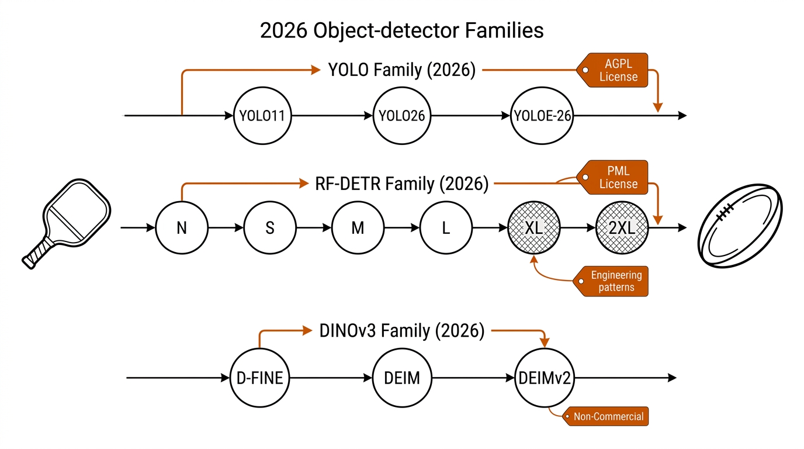
One column of the table deserves emphasis: RF100-VL transfer (100 real-world datasets) is a better predictor of "fine-tune on your weird sport class" than COCO rank. RF-DETR-L beats YOLO26-X there (88.2 vs 85.6 AP50) at a third of the parameters. COCO rank predicts demo quality; transfer rank predicts your second month.
| Model | AP (COCO) | Latency | License | Book Verdict |
|---|---|---|---|---|
| RF-DETR-M | 54.7 | 4.4ms | Apache-2.0 | Model of record — accuracy and license in one |
| D-FINE-M | 55.0 | 5.4ms | Apache-2.0 | Strong permissive alternative (as DEIM's partner) |
| YOLO26-M | 52.5 | 4.4ms | AGPL-3.0 | Great model; the license shapes what you can ship |
| RF-DETR-L / YOLO26-X | 88.2 AP50 / 85.6 | — | Apache / AGPL | RF-DETR-L beats YOLO26-X at 1/3 the parameters on RF100-VL transfer |
The pattern: accuracy ceilings are comparable; the license is the differentiator. For a book about practitioners shipping systems, the detector decision is 80% a legal decision.
8.3 The AGPL Decision: What It Actually Means
YOLO (all variants through YOLO26) is AGPL-3.0. The two clauses that matter:
- The §13 network clause: if you serve the model over a network, you must release your own source under AGPL — even if your product is a black-box API.
- Ultralytics FAQ position (verbatim on their site): fine-tuned weights inherit AGPL; even internal, from-scratch training needs the Enterprise license. The Pro plan ($29/seat/mo) is not a commercial exemption.
Enterprise = annual fee, quote-only, no public price (community-reported quotes $5k–20k+/yr are anecdotal — treat as [anecdotal]). One Enterprise license covers the whole YOLO portfolio. A trained YOLO model is therefore: fine for research, a legal liability for a closed product.
Read the licensor's FAQ as the operative risk envelope: Ultralytics' published position is stricter than many practitioners assume. Fine-tuned weights inherit AGPL; training from scratch on your own data still needs the Enterprise license; internal-only R&D is not exempt; and the $29/seat/month Pro plan is not a commercial exemption — it remains AGPL. Whether model weights are legally "covered works" is debated in open-source law, but the book's discipline is conservative: treat the licensor's published interpretation as the risk you carry until counsel says otherwise.
Two traps catch sport builders. First, the SaaS trap: a coaching API that never ships a binary still triggers §13 — wrapping YOLO in a microservice does not launder the license. Second, the contagion trap: the tracker layer is not exempt. The E09 winner, BoT-SORT, is AGPL upstream (as is BoxMOT), so a commercial ship needs the tracker decision too (chapter 9). The safe glues are supervision (MIT), ByteTrack upstream (MIT), and SAHI (MIT).
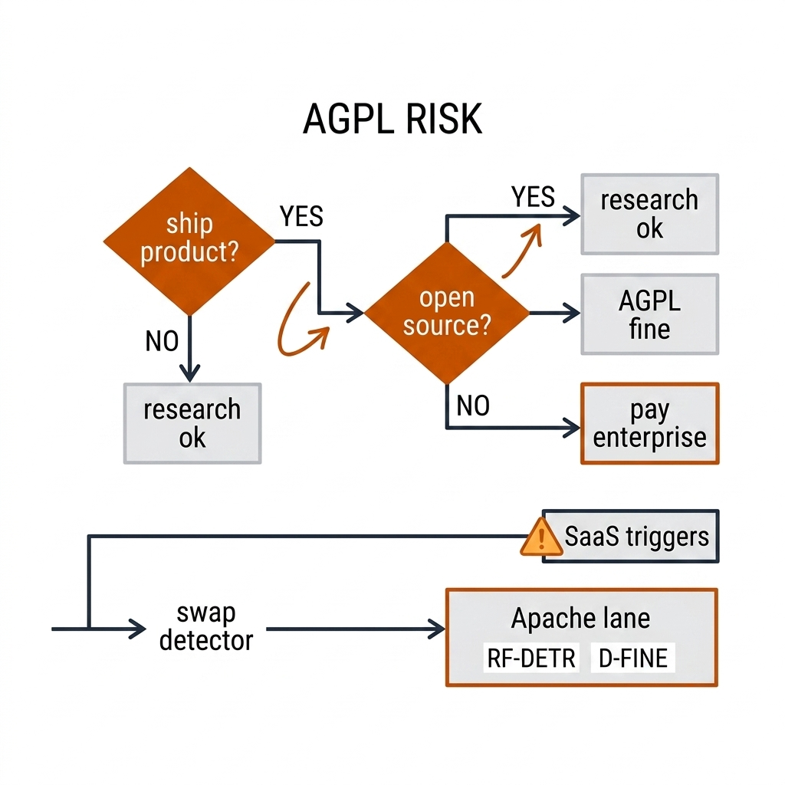
A fixed-camera pickleball coaching product built on YOLO26 must open-source its entire app, pay the annual fee, or swap detectors. A rugby league broadcast-analytics SaaS faces the same choice at ten times the revenue exposure. This is why the book's model of record is RF-DETR-M (Apache-2.0): the detector decision is made at selection time, in the license matrix (C31), not discovered at launch.
8.4 The PML-1.0 Gate: RF-DETR+ XL/2XL
RF-DETR's small/medium/large are Apache-2.0 — the permissive path. But the RF-DETR+ line (XL/2XL) is under PML-1.0, a platform license whose operative clauses (read from roboflow.com 2026-08-30): active platform plan required; auto-revocation on bad standing (including exceeding usage limits); no circumventing embedded metering; self-reporting duty where tracking is absent; no base-weight extraction. Segmentation variants of XL/2XL are Apache — the variant reference reads differently from detection. Read the license of the variant, not the family.
The practitioner consequence: XL/2XL are fine for the lab (a free plan counts as a platform plan), but a shipped product on those weights carries a perpetual Roboflow dependency with a kill-switch clause and metering obligations. The book's rule: teach on RF-DETR-M/L (Apache), show the XL/2XL numbers in the landscape table, name the gate, and never let a code example silently pip install rfdetr[plus]. The pickleball coaching product and the rugby analytics SaaS both pass comfortably under RF-DETR-M's 54.7 AP; neither needs the PML-gated top end.
8.5 The Noise Floor: Why the Ball Is Different
Detection metrics are not the problem — class coverage is. The class distribution explains it: COCO has ~262k person instances (~30.5% of the dataset) vs ~6.3k sports-ball instances (~0.7%) — a ~40:1 imbalance, compounded by polysemy (the COCO "sports ball" is a soccer ball, not a 74mm perforated pickleball). The book's E04 measured the consequence: 1,082 ball "detections" over 900 frames at median confidence 0.11; a 2× crop made it worse, not better (0.145).
The rule: for people, COCO weights are a floor; for the ball, they are noise. The ball is a temporal-model problem (TrackNet family, chapter 12).
COCO's APS bucket (objects under 32×32 px) is the closest published proxy for ball difficulty, and every family in the §8.2 table drops 20–30 points from headline AP to APS [verify per-model APS from the RF-DETR paper supplementary]. A pickleball at 40px wide in a 4K fixed-camera frame is technically COCO-"medium" by area, but its discriminative texture — the holes in 74mm perforated plastic — lives below 10px, under Nyquist. Motion blur at serve speed smears what remains. The rugby ball fails differently: at broadcast zoom it is medium-sized and occluded, not tiny — which is why §8.6c reaches the opposite fine-tuning conclusion for it.
8.5b The Honest Bake-Off: Speed vs Accuracy on Real Footage
Vendor latency tables are T4+TensorRT FP16 numbers; your product runs on a Mac, an edge box, or a cloud GPU — three different truths. The book's bake-off discipline is an A/B protocol: same golden frames, same confidence threshold, same harness, one variable changed at a time. The c08 lab ran the fixture half: E01's pickleball pipeline re-measured under ultralytics 8.4.117 (conf 0.2, imgsz 960, MPS) produced 80 raw → 23 court-filtered boxes across the 6 golden frames (measured, experiments/c08-detection/outputs/metrics.json). The M4 Max inference anchor is E02's yolo11n at 74.9 fps at imgsz 960 (~13ms/frame), comfortably inside a 30fps live-cockpit budget with headroom for tracking.
The latency tradeoff spans an order of magnitude across lanes. On the vendor T4 protocol, YOLO26 runs 1.7–11.8ms and RF-DETR 2.3–6.8ms — near-parity. On the M4 Max MPS lane, RF-DETR's transformer stack is inference-fine but slower on MPS — in the ~140ms-class at default settings [verify]. The accuracy difference (54.7 vs 52.5 AP at M-size) buys little on players; the license difference buys everything at shipping time.
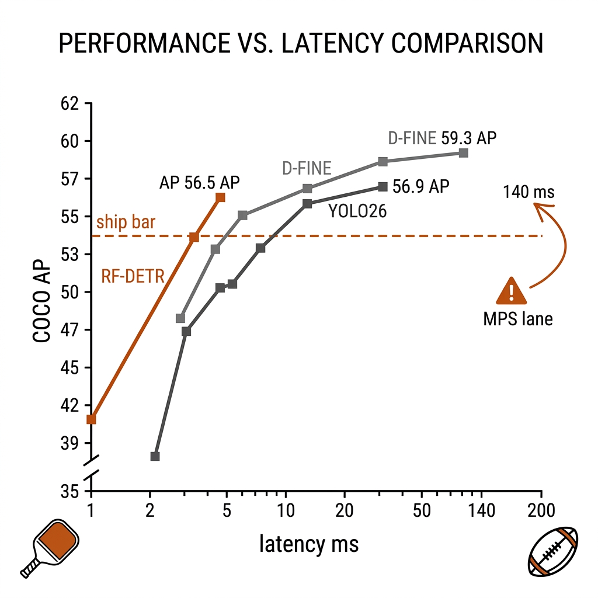
The rugby arm of the same bake-off adds the broadcast variable: run the grid on 100 nrl-001 frames with SAHI 2×2 tiling on/off to price the far-end-player fix. Tiling quadruples inference calls per frame, so the "fastest" detector on paper can lose the wall-clock race once the rugby scene's small-object density forces slicing. Measure it.
8.6 The Test-Conditions Lesson: E01 vs the Current Version
E01 measured 69 raw → 11 court-filtered boxes (84.06% rejection) on the golden fixtures. Our chapter-8 lab re-ran it under the current ultralytics (8.4.117, conf 0.2, imgsz 960): 80 raw → 23 court-filtered (71.2% rejection). Same fixture, same idea, different numbers — because conf and imgsz differ (E01 used conf 0.2 in its config; the drift is in the version and conditions, not the method).
This is the chapter's metrics-discipline story: detection results are test-condition statements. Always publish: model version, conf threshold, imgsz, device, and the exact frame set.

8.6b The Pickleball Object Set: A 3-Class Problem
Define the object set before you touch a model, because it decides where your annotation budget goes. Fixed-camera pickleball needs exactly three classes: player, paddle, ball. Their difficulty is wildly asymmetric:
- Player — solved by COCO weights out of the box (E02: 3.8 on-court persons/frame vs 4 ground truth, measured). Spend nothing here beyond the court-polygon scene filter.
- Paddle — not a COCO class at all, but visually distinctive, large (150–300px), and slow-moving. This is the ideal fine-tune class: bootstrap labels with a visual prompt (click one paddle in T-Rex2 or SAM 3 exemplar mode), human-verify, fine-tune into the Apache model. Expect this to work; budget a weekend.
- Ball — the E04 noise floor (1,082 candidates at median confidence 0.11, measured). Do not fine-tune a single-frame detector against this wall; the production answer is temporal (chapter 12's TrackNet family, which broke the wall at 87.2% recall with a 3-frame energy filter in E10).
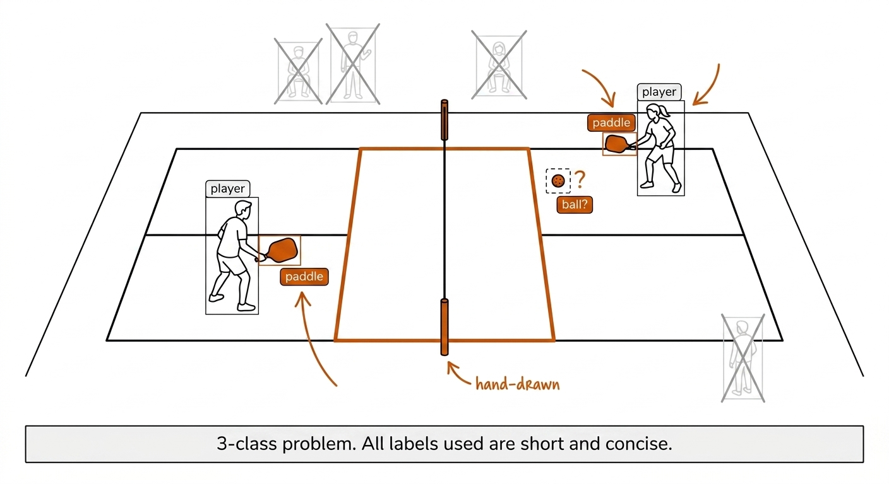
8.6c The Rugby League Object Set: 28 Classes or 3?
Broadcast rugby league presents the opposite temptation: enumerate everything. A full inventory is 13+13 players (split by team), the ball, the referee(s), and the goalposts — a 28-class detector if you encode team identity as class, more if you add markers, the dummy half, and touch judges. The book's advice is to resist it. Class is a poor identity mechanism: chapter 9's tracking and chapter 13's ReID assign identity far better than a detector head ever will, and every added class multiplies your annotation and class-balance burden.
The pragmatic rugby set is 3–4 classes: person (COCO-sufficient at 13.2 persons/frame, E08 measured), ball (a genuine fine-tune candidate here — at broadcast zoom the rugby ball is medium-sized and occluded rather than tiny, the opposite regime from pickleball), referee only if the downstream logic needs to exclude the referee from formation analysis, and goalpost only as a calibration landmark (chapter 7's TVCalib lane uses field lines, not posts). Team split comes from jersey color histograms or ReID embeddings downstream, not from a team_a/team_b class that collapses under alternate strips and wet weather.
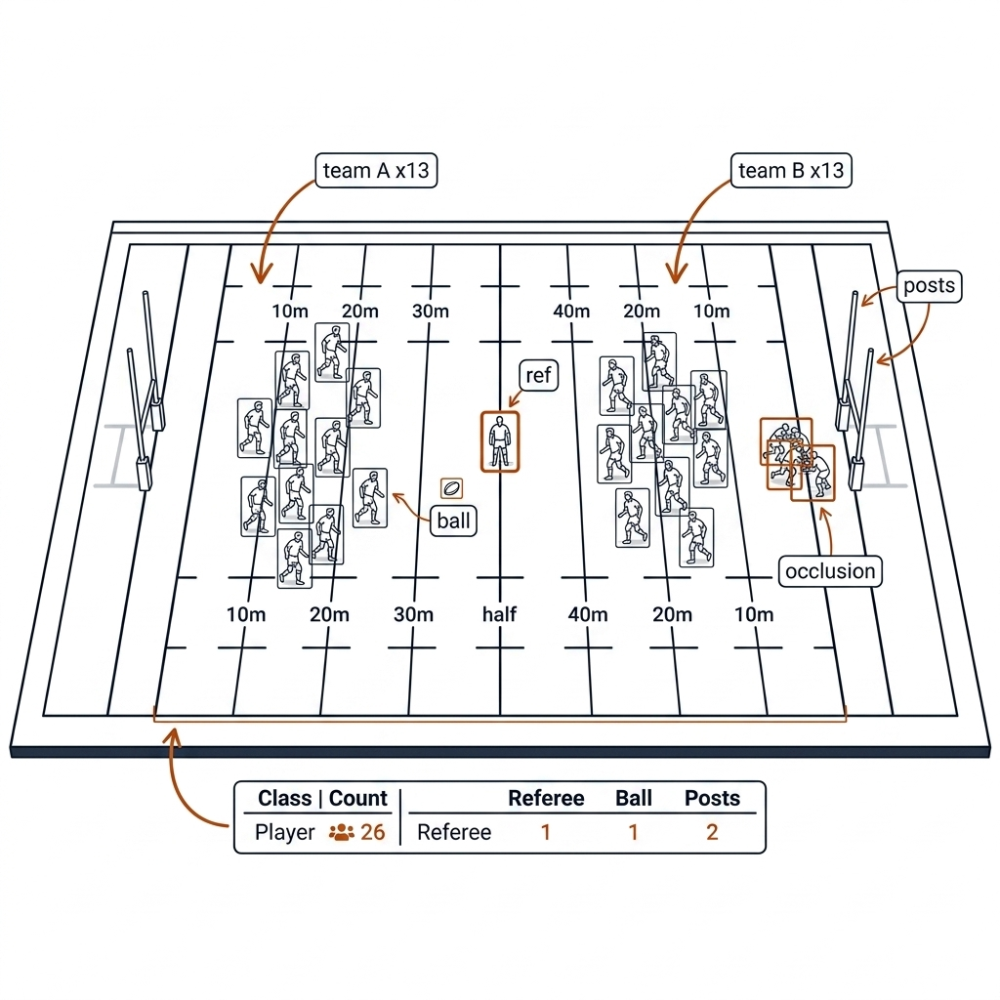
Document the ceiling explicitly: in a ruck, N players merge into M<N boxes and no detector resolves the burst. That is a known failure mode to hand to the tracker, not a class problem to annotate your way out of. The E14 negative result belongs here as the caution: adding detector-side motion compensation (boxshift GMC) made identity worse — more detection machinery is not more signal.
8.7 Fine-Tune vs Prompt: The Decision Table
| Route | Use When | Lane |
|---|---|---|
| Open-vocab prompt | Bootstrap a new class (paddle, line, ball) with zero labels | YOLOE-26 (AGPL, real-time), Grounding DINO 1.6 Pro (API-only), T-Rex2 (visual prompts), SAM 3 PCS (~850M params, SAM License, CUDA-official) |
| Fine-tune on 500 frames | The ship lane once a class is confirmed valuable | RF-DETR / D-FINE — Apache, Colab training (MPS training broken per verified finding) |
The 500-frame unit traces to E04's own next-step log: label ball positions on 500 frames, fine-tune TrackNetV4. It is the book's recurring cheap-first discipline: 500 frames of labels is a weekend; 5,000 is a season.
The honest framing is zero-shot for discovery, fine-tune for shipping. Open-vocabulary prompting (YOLOE-26 text classes, T-Rex2 visual prompts, Grounding DINO 1.6 Pro's 55.4 zero-shot COCO AP via API, SAM 3's promptable concept segmentation) answers "is this class detectable at all?" in an afternoon, with zero annotation spend. Its blind spots are real: "pickleball" as a word resolves poorly because the concept barely exists in image-text pretraining, so visual prompts beat text for sport hardware; and the open-vocab lanes carry their own licenses (YOLOE-26 is AGPL, YOLO-World is GPL-3.0, the Grounding DINO Pro weights are API-only) — fine for internal labeling, wrong for a shipped artifact.
Fine-tuning answers a different question: "this class is confirmed valuable and must run at production latency, forever." The 2026 economics favor it — RF-DETR was NAS-designed for small custom datasets (its RF100-VL column is 100-shot-scale transfer), and the DEIM matching recipe halves convergence time, so 300–1,000 annotated frames is the practical range for one new sport class. The bootstrap loop closes the circuit: prompt to draft labels, human-verify into a frozen 500-frame golden set, fine-tune the Apache model, and keep the prompt lane as the discovery sensor. One legal subtlety: whether AGPL reaches auto-labeler outputs (annotate with YOLOE-26, train an Apache model on the labels) is untested — the conservative rule is to bootstrap commercial projects with the API/open lanes (T-Rex2, OWLv2, SAM 3) [verify with counsel].
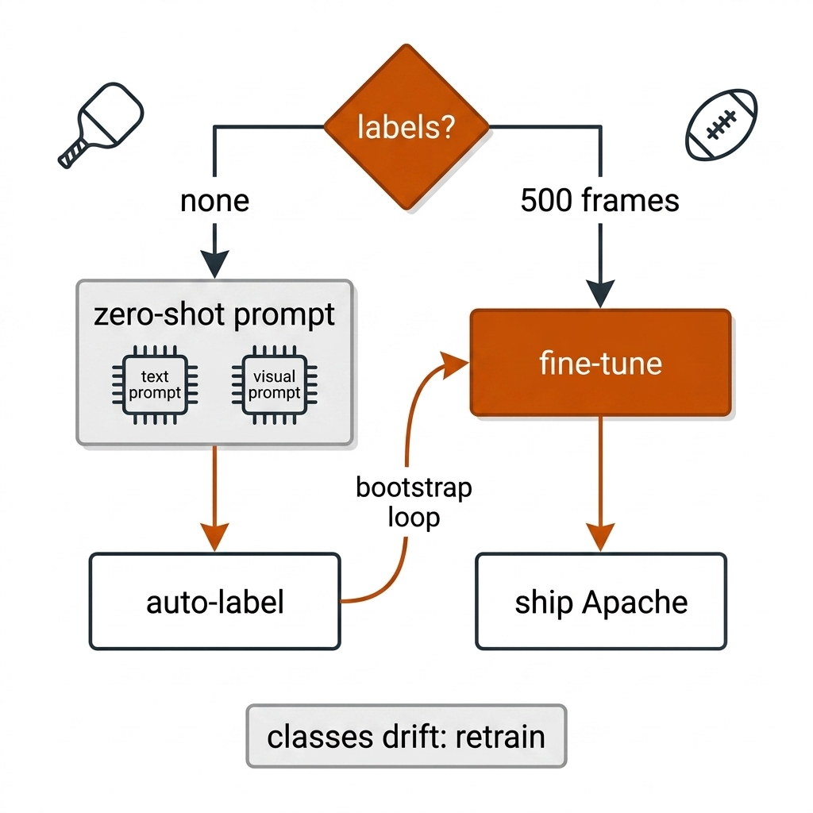
Dual-sport application: the pickleball paddle goes prompt → verify → fine-tune; the pickleball ball exits the loop early into the temporal model. The rugby ball stays in the loop to a fine-tuned RF-DETR class, while rugby players never enter it — COCO person plus SAHI tiling is the recipe until a measurement says otherwise.
8.8 Augmentation for Sport
Mosaic (multiclass context), copy-paste small-object oversampling (the Kisantal 2019 technique — paste ball crops), CutMix, motion-blur matched to measured px/frame (our lab: 5px at 1/1000, 83px at 1/60 — augment with the real blur, not random), SAHI sliced fine-tuning (train and test on the same slice scale), and broadcast-realism for rugby (scorebugs, watermark, LED ads).
Two sport-specific disciplines deserve emphasis. First, copy-paste small-object oversampling (Kisantal et al. 2019, arXiv:1902.07296) is the single highest-leverage augmentation for the ball classes: paste additional ball instances, with motion-blurred variants, onto plausible court or pitch positions, and keep person:paddle:ball instance ratios within ~10× so the 40:1 COCO curse does not reappear in your own dataset. Second, domain realism differs by sport: pickleball's fixed camera means a narrow augmentation distribution (one venue, one angle, varying light), while rugby's broadcast domain needs HEVC compression artifacts, letterboxed scorebugs, LED perimeter ads, and floodlight color temperature sampled from nrl-001, not from COCO statistics. Match your inference geometry: a full-frame-trained model evaluated under SAHI tiling underperforms — train with slices if you infer with slices.
8.9 Deployment: PyTorch → CoreML on the M4 Max
The practical matrix: develop in PyTorch on MPS, ship CoreML on the M4 Max (RF-DETR's native export covers onnx/tflite/tensorrt/executorch/coreml — note coreml needs fixed shapes for the ANE). The 2026 NMS-free families (RF-DETR, DEIM, D-FINE) remove the classic export-bug class entirely.
The training/inference split is the operational fact of 2026: train on cloud, infer on Mac. YOLO26 trains on MPS, but RF-DETR and D-FINE training is CUDA-first (MPS hits missing-op errors; workarounds are PYTORCH_ENABLE_MPS_FALLBACK=1 or CPU, both slow) — the Colab T4 free tier trains the N/S/M sizes overnight. Inference is the reverse: everything in §8.2's Apache lane runs fine on MPS/CPU, and CoreML is the production path for the pickleball sideline device and the rugby analyst's laptop alike. Export-integrity rule: validate every export against the golden fixture (box-level IoU ≥ 0.95 vs PyTorch reference on the same 6 pb-003 frames) before benchmarking fps — an export bug that shifts boxes silently invalidates downstream metrics.
8.10 Working Recipes
- Pickleball: COCO person is fine; paddle via visual-prompt bootstrap then fine-tune; ball is temporal-model territory (handoff to chapter 12). Model of record: RF-DETR-M.
- Rugby: COCO person + SAHI tiling for far-end players; polygon filtering needs per-frame registration (handoff to chapter 7); the rugby ball IS a fine-tune candidate — the opposite of pickleball (its scale/blur regime differs).
Both recipes start from the same ordering: license first (Apache lane for anything shipped), then measure raw vs ROI-filtered on your fixture, then check class coverage, and fine-tune only after the noise floor justifies it. The pickleball recipe spends its budget on the paddle and the temporal ball handoff; the rugby recipe spends its budget on tiling, per-frame registration (E08 measured 9.76px/frame broadcast camera drift — a fixed polygon is invalid when |pan| >> 0), and the tracker where the actual losses live (E09: 0.642 → 0.814 HOTA, switches 14→2).
8.11 The Shipping Audit Checklist
- Dependency scan: ultralytics/boxmot/BoT-SORT (AGPL), YOLO-World (GPL) — know each dependency's license at the distribution chain.
- Weights provenance ledger: where did each .pt/.pth come from? (license attaches at the weights too)
- PML grep gate: no RF-DETR+ XL/2XL without an active platform plan.
- Gated-license inventory in the repo (the C31 license matrix, applied at selection time).
- Re-audit on every version bump: licenses change (RF-DETR+ is a separate package from RF-DETR).
8.12 Real-Time Open-Vocabulary Detection: DART + SAM 3
The closed-set detector needs labels and training. The frontier question: can the open-vocabulary foundation models (SAM 3-class, Grounding DINO-class) run in real time? The 2026 answer is yes — with one architectural trick: DART (Detect Anything in Real Time, arXiv 2603.11441, March 2026) exploits the fact that the visual backbone is class-agnostic and computes it once, batching the prompt decoder across all classes.
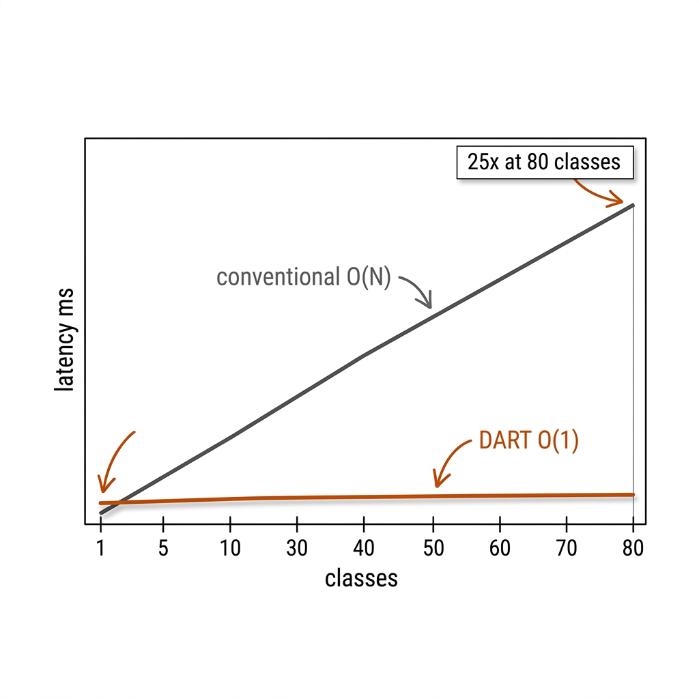
The [verify] gate is real: the book has not re-run the GPU lane, so DART's 55.8 AP, 25x, and 38.7 AP distilled claims stand as source-backed until the Colab run. Conventional open-vocabulary detection runs the full pipeline per class, so latency scales O(N); DART observes the backbone is class-agnostic, computes it once, and batches the prompt decoder across classes, adding ~0.15ms per class. For sport that is the difference between "detect the ball" and "detect the ball, paddle, NVZ line, ruck point, defensive line, and referee" in one pass. Classes too rare to justify 500 labels can now be detected with a prompt.
8.13 Pickleball: The Open-Vocabulary Use Cases
Sub-pixel paddle face telemetry: prompting "pickleball paddle blade" yields the contour; the orientation vector computes the face angle (the report: 48.3° at 0.4ms) — the C10 mask-to-contour recipe now per-frame.
Zero-shot NVZ foot-fault auditing: prompting "player shoe" and "kitchen non-volley zone line" gives the polygon intersection test without manual court calibration. The honest caveat belongs to C06's Z-limit: the intersection is in image space; the metric foot-fault verdict still needs the plane geometry (C14). Image-space intersection is a screen check; the metric check is multi-view.
8.14 Rugby League: The Collision-Context Use Cases
10m offside line compliance: prompting "ruck breakdown point" and "advancing defensive line" computes the retreat distance in metric pitch coordinates (with C07's per-frame calibration for the meters). The C28 HUD alert becomes promptable, not trained.
Bunker high-tackle grounding: prompting "tackler shoulder contact point" and "ball carrier sternum" extracts contact heights for foul review — the welfare lane (C16's Bath 2025 framing). The honest gate: the operating point is policy (68% sensitivity / 84% specificity — never an automated call), and DART's grounding is the evidence provider, not the verdict.
8.14b The 10 Detection Use Cases: Applied Framework
The use cases below are the applied bridge from the detector landscape above to the two sports. They follow three categories: A. The Core Object Contract (01-03) — the classes every pipeline must get right; B. Hard Scenes & Open Vocabulary (04-07) — where detection meets the moments that matter; and C. The Shipping Decisions (08-10) — where the detector choice becomes a product decision. Each case pairs a pickleball and a rugby league application, and each carries its evidence label: measured (book experiment), source-backed (paper or vendor protocol), or [verify] (practitioner model, not yet established).
The use cases draw on the satellite tooling around the detectors — the ecosystem table maps each tool to its sport use:
| Tool | License | Role | Pickleball Use | Rugby League Use |
|---|---|---|---|---|
| supervision | MIT | Box filtering / annotation glue | Court-polygon gate (E01: 69→11) | ROI filters after per-frame registration |
| SAHI | MIT | Sliced inference + sliced fine-tuning | Optional ball-hunt slices at 4K | 2×2 tiling for far-end small players |
| ByteTrack (upstream) | MIT | Tracker glue | Safe commercial tracker base | E09 baseline (0.642 HOTA) |
| BoT-SORT / BoxMOT | AGPL | E09 tracker winner | Lab only for a commercial ship | 0.814 HOTA — but the license follows it (C09) |
| T-Rex2 | Code Apache / API | Visual-prompt bootstrap | Click one paddle → paddle labeler | Click the ruck point → draft labels |
| Grounding DINO 1.6 Pro | API-only | Text-prompt bootstrap (55.4 zero-shot AP) | "kitchen line" drafts | "advancing defensive line" drafts |
| SAM 3 | SAM License (gated) | Concept segmentation + IDs | Paddle exemplar → all instances | "players in white" team split |
| YOLOE-26 | AGPL | Real-time open vocabulary | Internal labeling sensor | Internal labeling sensor |
| DART | Repo: mkturkcan/DART | Shared-backbone real-time open vocab | Role prompts at frame rate (UC 05) | Role prompts at frame rate (UC 05) |
| Roboflow Inference | Docker / platform | Hosted RF-DETR serving | Dev serving lane | Dev serving lane; PML metering on XL/2XL |
Category A: The Core Object Contract (UC 01-03)
UC 01 — Player Detection at 60 fps
The live cockpit (C28) needs on-court person boxes inside a 16.6 ms frame budget; anything slower drops the overlay behind the rally. The mechanism is a budget equation, not a model name: tdetect + ttrack + trender ≤ 1000/60 ms. The measured anchor is E02's yolo11n at 74.9 fps (~13.3 ms) at imgsz 960 on the M4 Max [measured] — inside budget with headroom for the tracker; RF-DETR-M posts 4.4 ms on the T4 TensorRT protocol [source-backed]. Scene filtering is part of detection quality, not post-processing: the court-polygon gate took 69→11 raw boxes (E01) and 80→23 in the c08 re-run [measured] — the "errors" were spectators, and they were free to remove.
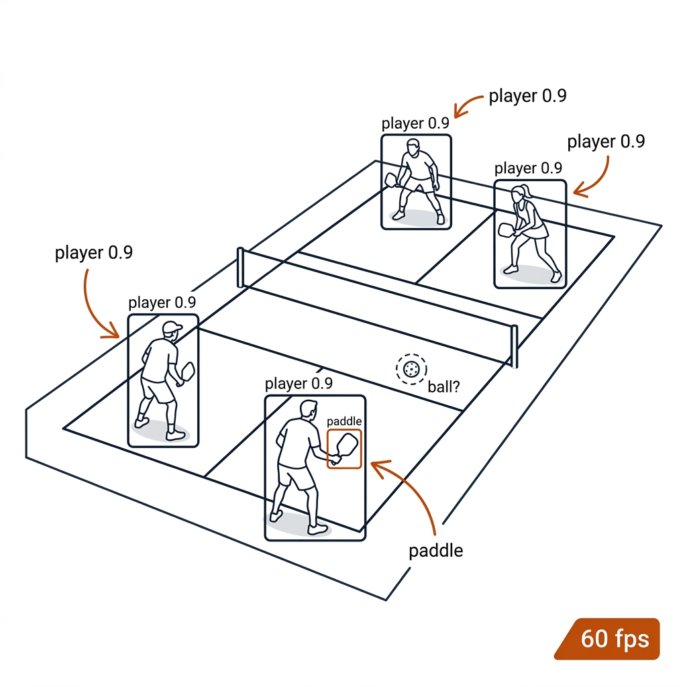
Payoff: a coaching overlay that never lags the rally — the difference between a live tool and a replay tool.
UC 02 — Ball Detection in Two Regimes
The ball is the highest-value object in both sports and the worst-detected in both — but for opposite reasons. The 74 mm perforated pickleball is ~40×25 px in a 4K fixed frame; its discriminative texture (the holes) has a spatial period below 2 px, under the Nyquist limit (ftexture > 1/(2Δ)), and serve-speed motion blur smears what remains. E04 measured the consequence: 1,082 candidate "ball" boxes over 900 frames at median confidence 0.11 [measured] — a noise floor, not a track. The 280 mm oval rugby ball is medium-sized at broadcast zoom and occluded, not tiny — a fine-tunable regime. COCO's APS bucket is the closest published proxy for the pickleball regime, and every family drops 20-30 points from headline AP to APS [verify per-model APS in the RF-DETR supplementary].
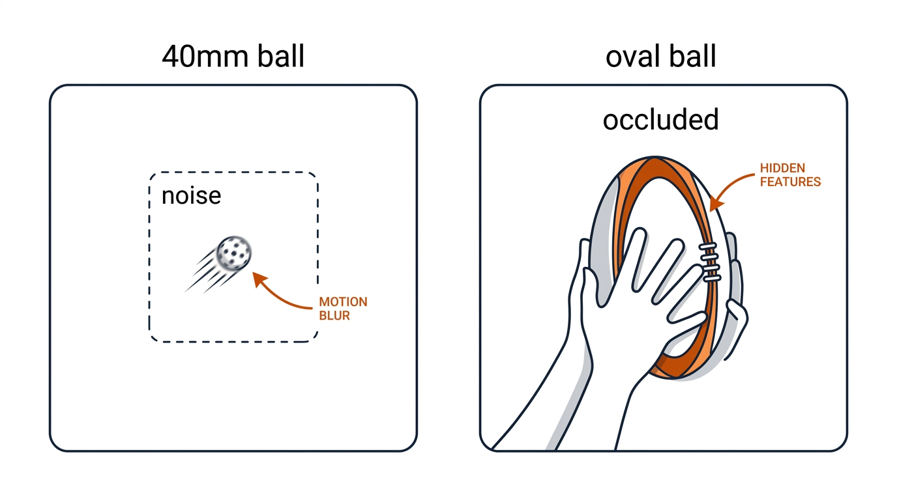
Payoff: the right instrument per regime — one sport's annotation season saved, the other's spent where it works.
UC 03 — Paddle & Equipment Detection: The NMS/IoU Discipline
Equipment classes are absent from COCO, and loose or duplicated boxes corrupt everything downstream that takes geometry from them. The math that governs "loose" and "duplicate": intersection-over-union, IoU = |A∩B| / |A∪B|, and classic NMS — keep the argmax-score box, suppress any box with IoU > θ (θ ≈ 0.45-0.7). AP averages precision over IoU thresholds 0.50:0.05:0.95; for line-call and face-angle geometry, AP75 is the first threshold that punishes the boxes you actually care about. The 2026 NMS-free families (RF-DETR, D-FINE, YOLO26) replace suppression with one-to-one Hungarian-style assignment — one stage fewer, and the classic CoreML/ONNX NMS-op export-bug class gone with it. The paddle itself follows the §8.7 loop: visual-prompt bootstrap, human verify, fine-tune into the Apache checkpoint on 500 frames [source-backed recipe].
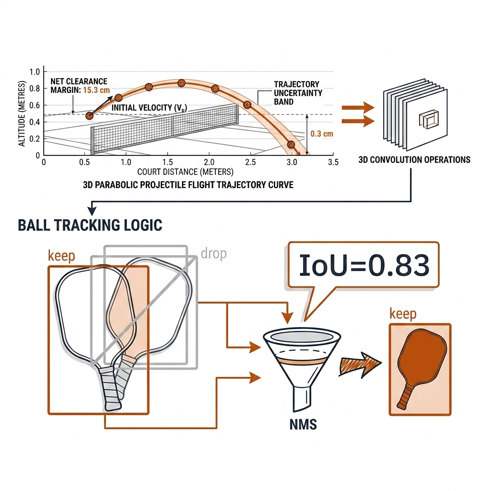
Payoff: equipment boxes precise enough to take angles and calibrations from — AP75 discipline where AP50 would do for a demo.
Category B: Hard Scenes & Open Vocabulary (UC 04-07)
UC 04 — Referee Detection for Exclusion
The referee is a person-shaped pollutant: formation metrics, defensive-line distances, and tracker ID budgets all degrade when officials count as players. The mechanism is a set difference, Dplayers = Dpersons \ Dofficials, where the official class comes from a one-class fine-tune (the kit is visually distinct) or a zero-shot "referee" prompt for discovery. The contamination cost compounds: each false person per frame adds an expected extra track and corrupts the downstream Voronoi and offside computations (C23) that assume the person set is the player set. Pickleball's version is the E01 lesson — most of the 84% polygon rejection was exactly this class of error: spectators, benches, the referee stand.
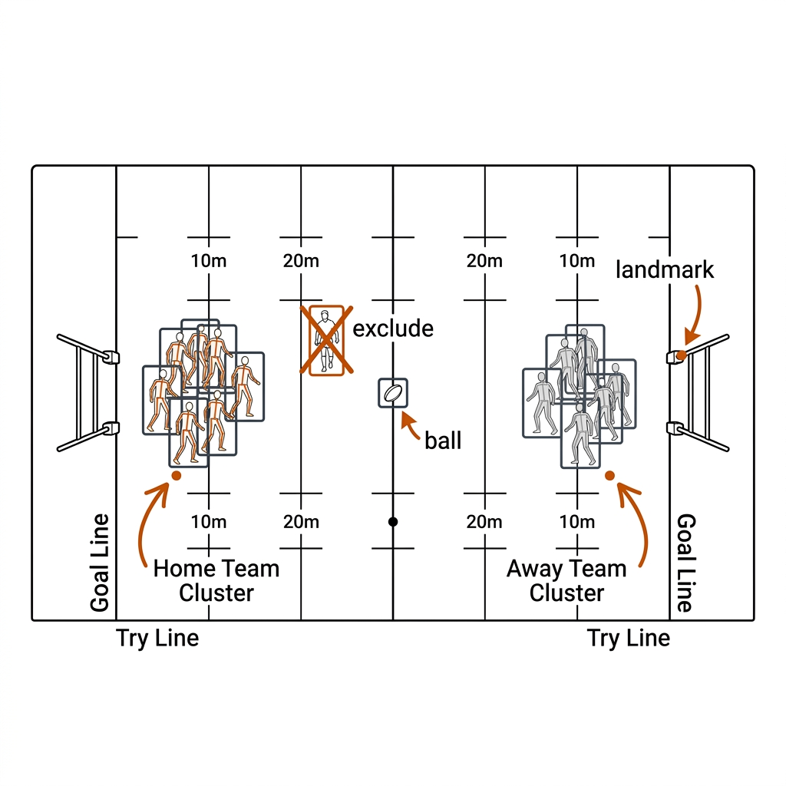
Payoff: every downstream metric measures players, not officials — one excluded box is worth more than one detected one.
UC 05 — Role Detection via DART-Style Open Vocabulary
Tactical models need roles — server, returner, ruck, dummy half — but roles are too rare and too shifting to justify per-role annotation and training runs. Conventional open-vocabulary detectors run the full pipeline per class, so latency scales O(Nclasses). DART (arXiv 2603.11441) exploits the class-agnostic backbone: compute it once, batch the prompt decoder across all prompts — t ≈ tbackbone + 0.15 ms × N [source-backed; the 25× speedup claim stands un-re-run by the book, on the §8.15 measure list]. The practical consequence: "detect the ball" and "detect the ball, paddle, NVZ line, ruck point, defensive line, and referee" cost nearly the same per frame.
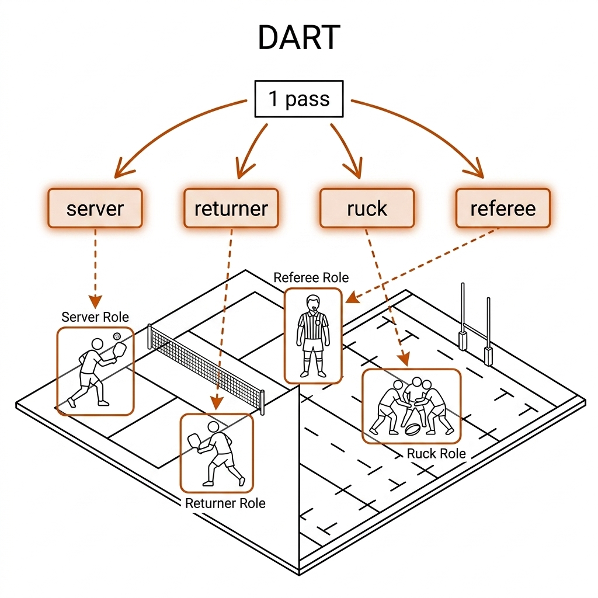
Payoff: a role layer that ships as prompts, not as training runs — tactical classes appear the day someone writes the prompt.
UC 06 — Occlusion-Aware Detection: Kitchen Firefights and Rucks
The highest-leverage moments are the most occluded: two bodies converging at the NVZ line in a dink firefight; five bodies bound in a ruck. The detector's crowd ceiling is structural — when the true boxes' pairwise overlap exceeds the suppression or assignment threshold, N players merge into M < N boxes, and lowering the NMS θ trades duplicates for merges without escaping the tension; the NMS-free one-to-one matching hits the same ceiling inside the assignment solver. The discipline is to document the ceiling and hand the burst to the layers built for it: tracking (C09) and ReID (C13). E14's negative result is the caution [measured]: detector-side motion compensation made identity worse — more machinery at this layer is not more signal.
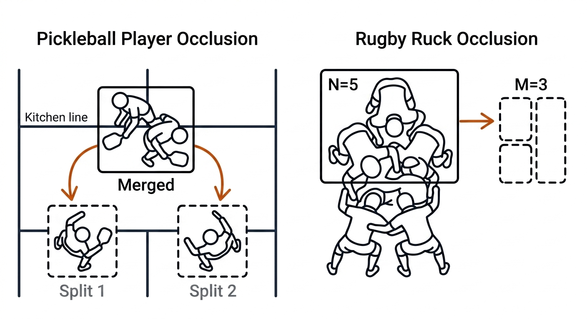
Payoff: honesty about the ceiling — budget flows to association and multi-view, not to a bigger detector that still merges the ruck.
UC 07 — Domain Shift: Indoor Court Lighting vs Outdoor Stadium
A detector tuned at one venue silently degrades at the next; the failure arrives as confidence drift, not an error message. The mechanism is the train/test distribution gap: APood < APid whenever lighting temperature, background clutter, compression, or graphics overlays move between domains. The book's proxy discipline: hold out one venue or one day as a never-trained test set and report ΔAP alongside AP [verify — the book has not yet run a venue holdout; it is the first item this use case adds to the measure list]. The fixes are domain-matched: §8.8's augmentation sampled from the real domain (LED flat-light and wall clutter for indoor pickleball; floodlight color temperature, HEVC artifacts, letterboxed scorebugs for broadcast rugby), and per-frame registration before any polygon filter — E08 measured 9.76 px/frame broadcast drift [measured], which invalidates a fixed polygon outright.
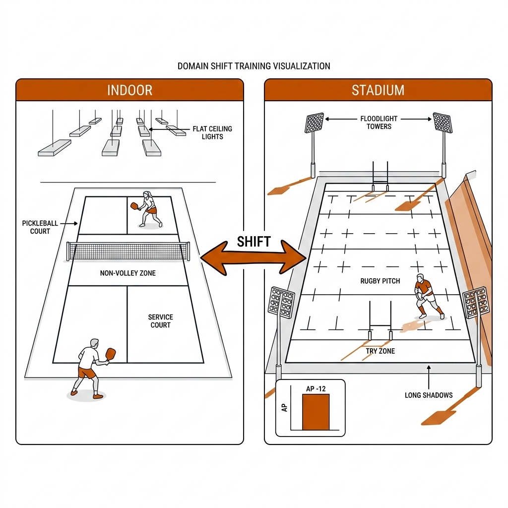
Payoff: the venue-change regression test catches the drift in the lab, before the client's first away game does.
Category C: The Shipping Decisions (UC 08-10)
UC 08 — The Speed–Accuracy Tradeoff in Production
The benchmark table is not the product; the product is one operating point chosen under a wall-clock budget. The mechanism: effective throughput = 1000 / (tdet × ntiles) fps — SAHI 2×2 tiling quadruples inference calls per frame, so the paper-fastest detector can lose the wall-clock race once rugby's small-object density forces slicing. The Pareto rule: pick the highest-AP model still inside the frame budget at your tile count on your hardware lane — the T4 TensorRT protocol and the M4 Max MPS lane differ by an order of magnitude (§8.5b), so every operating point must be re-measured, not read from the vendor table [source-backed protocol; own tiling run on the measure list].
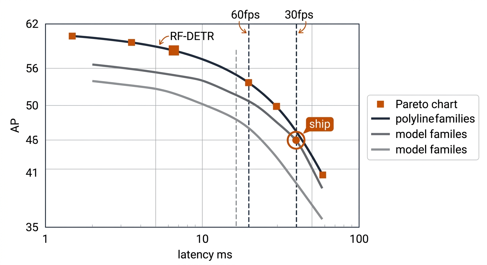
Payoff: the operating point becomes a measurement with a budget line, not a benchmark rank with a hope.
UC 09 — AGPL-Safe Deployment, Decided Per Use Case
The same detector is free in one product and a liability in another; the decision belongs at selection time, per use case, in the C31 license matrix. The mechanism is §13: the network clause makes "we only serve it as an API" a non-exit, and Ultralytics' FAQ closes the "we trained our own weights" exit too. The economics: the Enterprise fee is quote-only (community-reported $5k-20k+/yr, [anecdotal]) against a weekend re-fine-tuning an Apache checkpoint on the frozen 500-frame set — for most sport products the swap costs less than the first invoice. The per-use-case verdicts: internal lab → any detector, AGPL fine; paid coaching app → Apache lane or Enterprise; SaaS → Apache lane (§13 forecloses the rest); broadcast analytics → Apache lane plus the tracker audit — BoT-SORT is AGPL upstream, so the C09 decision is part of this one.
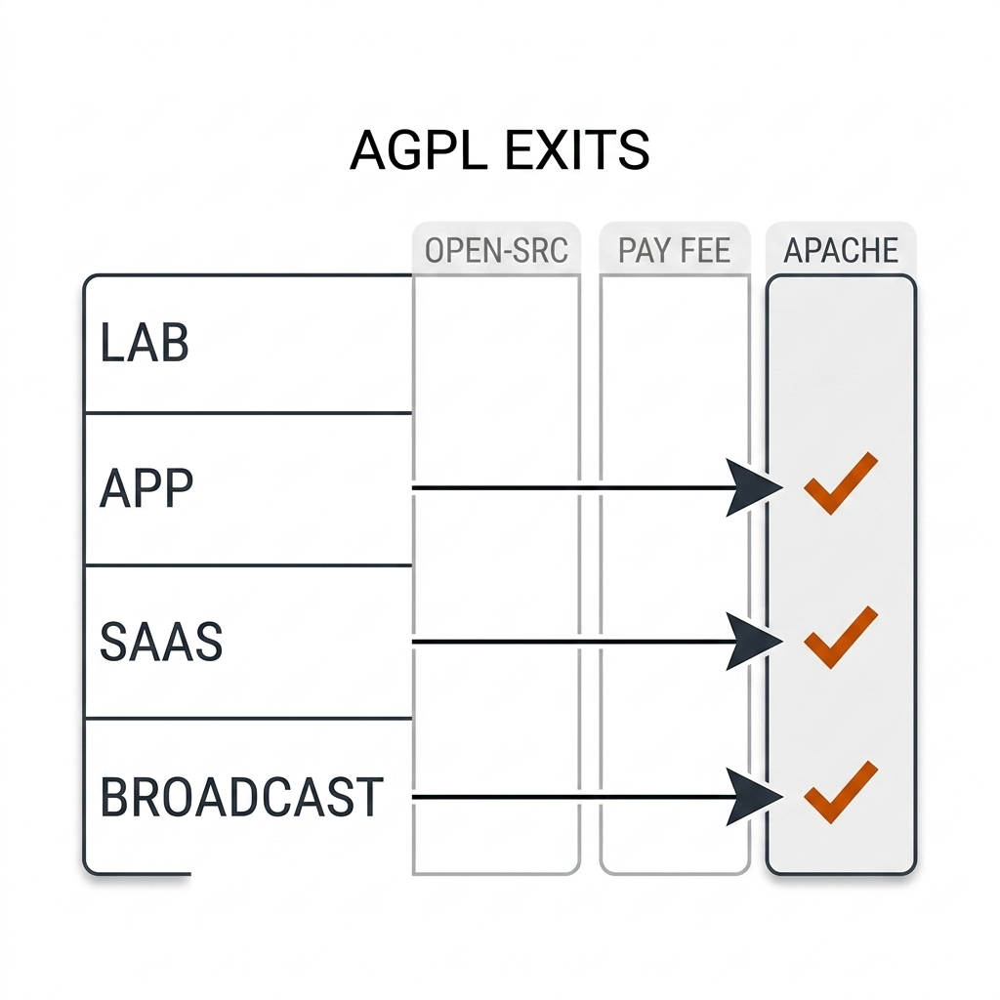
Payoff: the license decision is a selection-time line item in C31, never a launch-week surprise from counsel.
UC 10 — Fine-Tuned vs Zero-Shot, Per Sport
"Should we train a model?" has a different answer for every (sport, class) pair, and the wrong default burns a season of annotation. The mechanism is the bootstrap loop's economics: zero-shot discovery costs an afternoon and zero labels; fine-tuning costs 300-1,000 verified frames and a Colab night; the loop turns one into the other only after a class proves valuable. The verdict matrix, applied: pickleball player → COCO zero-shot, solved (E02); pickleball paddle → prompt-bootstrap → fine-tune; pickleball ball → exit early to the temporal lane (UC 02); rugby player → COCO + SAHI, never enter the loop; rugby ball → fine-tune, the opposite regime; rugby referee → prompt for discovery, one-class fine-tune if the exclusion metric justifies it (UC 04).
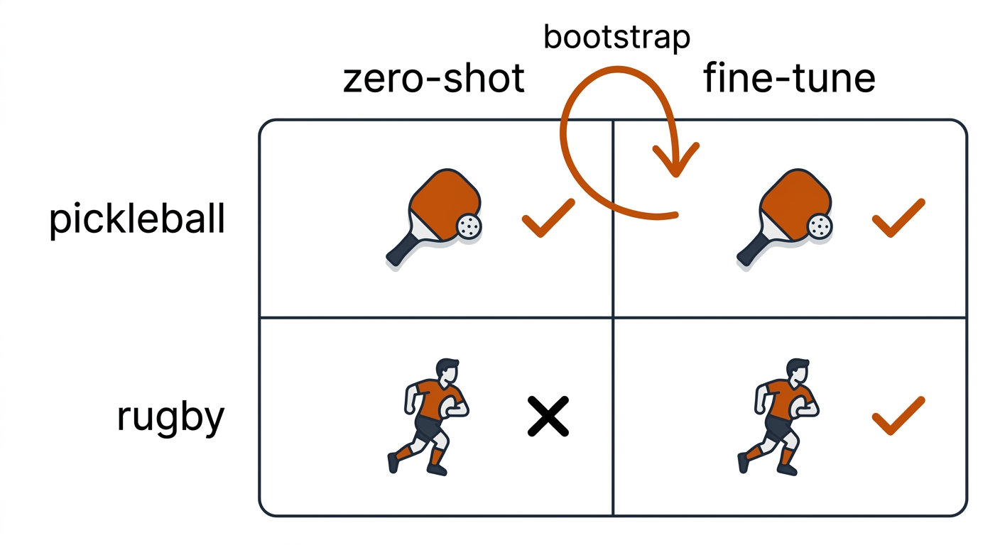
Payoff: annotation budget lands only where the noise floor justifies it — the 500-frame unit spent twice, not ten times.
8.14c Runnable Implementation
The minimal detection layer — Apache-lane detector, scene filter, official exclusion, optional slicing — is the starting skeleton; the full lab version lives in experiments/c08-detection:
from rfdetr import RFDETRMedium # Apache-2.0 lane (model of record)
import supervision as sv # MIT glue: polygons, NMS, annotators
class SportDetectionLayer:
def __init__(self, sport, court_poly=None, exclude_classes=("referee",)):
self.model = RFDETRMedium() # fine-tuned checkpoint for sport classes
self.court_poly = court_poly # pickleball: E05 homography polygon
self.exclude = exclude_classes # UC 04: subtract officials, not detect them
self.sport = sport
def detect_frame(self, frame, registered_poly=None):
# Rugby: per-frame registration (C07) before any polygon filter
poly = registered_poly if self.sport == "rugby_league" else self.court_poly
dets = self.model.predict(frame, confidence=0.25)
dets = dets[dets.class_names != list(self.exclude)] # set difference
if poly is not None:
dets = sv.filter_polygon(dets, poly) # E01: 69 -> 11
return dets # handoff: C09 tracking, C12 temporal ball, C28 cockpit
def detect_rugby_wide(self, frame):
from sahi import get_sliced_prediction # MIT; UC 08 tiling, priced not assumed
return get_sliced_prediction(frame, self.model, slice_height=540,
slice_width=960, overlap_height_ratio=0.2)The skeleton encodes the chapter's orderings: license first (the import is the Apache lane), scene filter before tracking, exclusion as subtraction, tiling as a priced option with its own measurement — and the ball deliberately absent, handed to C12's temporal model rather than detected here.
8.14d What This Adds to the Pipeline
The ten use cases are not separate projects; they are the detection layer applied across the book's five verbs. UC 01 and UC 04 produce the clean player set that C09's tracking and C13's ReID consume; UC 02 hands the ball to C12's temporal family with the regime diagnosis that decides whether the handoff happens; UC 03 feeds C10's paddle face angle and C07's calibration landmarks; UC 05's role prompts are the input layer C23's tactical ML assumes; UC 06 documents the crowd ceiling C09 must absorb; UC 07 extends C05's run-manifest discipline with a venue-holdout regression test; UC 08 sets the operating point the C28 cockpit budget enforces; UC 09 is the detector row of C31's license matrix, applied; UC 10 is §8.7's decision table resolved per (sport, class). Every number above carries its label: measured in the book's lab (E01/E02/E04/E08/E10/E14), source-backed from a named paper or vendor protocol, or [verify] where a practitioner model still needs its afternoon of lab time.
8.15 What I Would Measure Next
- RF-DETR vs D-FINE vs YOLO26 bake-off grid on the golden fixtures (MPS, ONNX, CoreML) with a 30fps live-cockpit pass gate.
- Data-scaling curve: 100/300/500/1000 labeled frames → AP50, to answer "is 500 enough?".
Three more, in priority order. The MPS-lane RF-DETR number: the ~140ms-class figure in §8.5b is a lane estimate [verify] — the bake-off grid must produce the measured M4 Max latency for RF-DETR-N/S/M under PyTorch-MPS, ONNX, and CoreML before the deployment claims harden. The COCO sports-ball instance count: the ~6.3k figure behind the 40:1 imbalance is cited, not computed — one pycocotools pass over instances_train2017.json makes it measured [verify]. The DART GPU lane: re-run the paper's configuration on Colab against a pb-003 segment and an nrl-001 ruck sequence, so the §8.13–8.14 class claims carry book-measured numbers. Each item is one afternoon of lab time; together they convert every remaining [verify] into an E-ID.
8.16 Sources
- RF-DETR repo + single-protocol benchmark (pycocotools, COCO val2017, T4 TensorRT FP16): github.com/roboflow/rf-detr; paper arXiv:2511.09554 (ICLR 2026); variant/license split: roboflow-rf-detr.mintlify.app/reference/model-variants.
- PML-1.0 full text: roboflow.com/platform-model-license-1-0 (read verbatim 2026-08-30); RF-DETR+ package: github.com/roboflow/rf-detr_plus.
- Ultralytics: ultralytics.com/license (FAQ read 2026-08-31); AGPL-3.0 text: gnu.org/licenses/agpl-3.0.html; YOLO26 docs: docs.ultralytics.com/models/yolo26; YOLOE: docs.ultralytics.com/models/yoloe.
- D-FINE: github.com/Peterande/D-FINE (ICLR 2025); DEIM: arXiv:2412.04234 (CVPR 2025); DEIMv2 (non-commercial): arXiv:2509.20787; DINOv3: arXiv:2508.10104.
- DART: Turkcan, arXiv 2603.11441 (March 2026); repo mkturkcan/DART.
- Open-vocabulary lanes: YOLO-World v2 (GPL-3.0) github.com/AILab-CVC/YOLO-World; Grounding DINO 1.6 Pro / DINO-X (API) github.com/IDEA-Research/grounding-dino-1.5-api; T-Rex2 github.com/IDEA-Research/T-Rex; SAM 3 (SAM License): arXiv:2511.16719.
- Sport-specific tooling: SAHI (MIT) github.com/obss/sahi; copy-paste small-object augmentation: Kisantal et al. 2019, arXiv:1902.07296; RF100-VL transfer benchmark: github.com/roboflow/rf100-vl; COCO eval definitions: cocodataset.org.
- Book lab evidence: E01 (69→11 court-filtered), E02 (74.9fps, 3.8 on-court persons/frame), E04 (ball noise floor), E08 (13.2 persons/frame, 9.76px/frame drift), E09 (tracker bake-off), E10 (temporal ball, 87.2% recall), E14 (GMC negative result); c08 reproduction:
experiments/c08-detection/outputs/metrics.json.